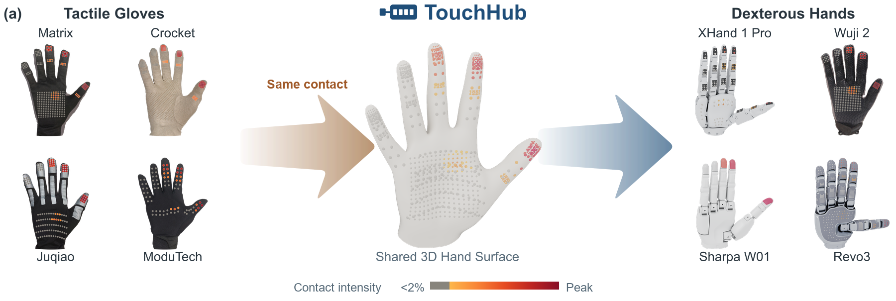

3D surface transport
Geometry transfers contact across taxel layouts on a common MANO surface. No learned transport weights are required.
Human touch. Native robot sensing.
A frozen tactile interface across sensing technologies,
sensor layouts, and hand embodiments.
Research project · Anonymous manuscript
3D kinematic retargeting transfers human hand motion across robot embodiments, yet tactile signals remain tied to the recording glove. Differences in sensing principles, taxel layouts, and surface coverage make transferring touch from gloves to robot hands difficult. We present TouchHub, a plug-and-play framework that maps human glove touch directly to a robot hand’s native taxels without paired contacts or retraining. TouchHub separates hand geometry from sensor response: it registers sensor layouts on a shared MANO surface, restores compact contact footprints with a self-supervised within-sensor transformer, and aligns response scales with a monotone calibrator. Using only 3D layouts and unlabeled touch recordings, the frozen model transfers touch across previously unseen, heterogeneous skins. Retargeted human touch improves closed-loop manipulation, even with limited robot demonstrations.
The complete research overview, from tactile retargeting to real-robot experiments.
Human tactile data is recorded with diverse sensing technologies, layouts, and coverage. A shared interface makes these recordings reusable.
Representative human tactile datasets. The six clips highlight the gloves together at 10 seconds; the hand motions continue.

Separate where contact happens from how a sensor responds.
Geometry transfers contact across taxel layouts on a common MANO surface. No learned transport weights are required.
A local transformer restores compact contacts from resampling blur. Within-sensor round trips supply self-supervision.
Unlabeled quantile statistics align response scales. Calibrated intensity conditions restoration of native target readings.
Geometric transport can spread a compact press across too many taxels. TouchHub restores its footprint while preserving contact location.

Held-out cross-sensor examples. Centroid error and off-region activation are lower-is-better metrics.
Controlled bench-top evaluation across 12 transfer directions.
30%lower log-reading error than OpenTac-style
0.60 vs. 0.86 · 12 transfer directions
89%less false activation on held-out Matrix skins
0.062 vs. 0.568 · compared with geometry
Final manuscript, Table 1. Reported aggregate values, not video-clip counts.
Both Matrix skins are excluded from training in this held-out setting. The same frozen modules reduce false activation while preserving localization.
Two dexterous hands. Three contact-rich tasks.
Compare TouchHub with robot-only training and co-training with human touch masked.
Labels describe the selected rollout; bars report aggregate task success from the paper. A successful clip is not a 100% success rate. Human touch masked retains the robot’s tactile inputs.
Reuse human touch for robot policy learning and cross-glove tactile prediction.
90% success
79 robot demonstrations plus 150 human demonstrations. TouchHub stays frozen while the downstream policy is trained.
48.1% accuracy
20 labeled episodes per target glove, averaged over three gloves. Labels adapt the reader, not TouchHub.
Shared legend; the two experiments use different subsets of comparison methods.
Footprint restoration and scale calibration work together.
Synthetic uses within-sensor round trips through synthetic MANO layouts. Restoration training still uses real touch, but does not require recordings from other real skins.
Native-taxel retargeting. Frozen-model sensor onboarding.
Human–robot co-training with limited robot data.